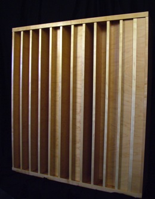
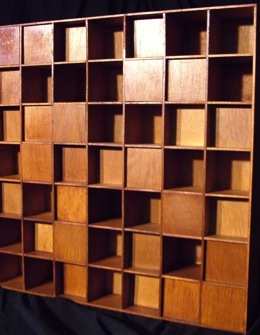

Acoustical diffusion
is used when you want to control reflection and redirection of sound.
Where absorption materials reduce the overall energy of sound, diffusion
disperses the sound energy evenly over a larger area.
Diffusion is ideal in places where there is conflict between clarity
of spoken word and quality music experience. Using only absorbing
materials increases intelligibility of spoken word, but can be detrimental
to music conditions. Using diffusion however minimizes echo while
at the same time conserving necessary music and speech energy.
Diffusion creates an acoustically "larger" space by making the room
boundaries less obvious. "Perfect" diffusion will make the listening
experience the same at all positions in a room. |

Quadratic Residue Diffuser |
|

Multi-Dimensional Quadratic Residue Diffuser |
|